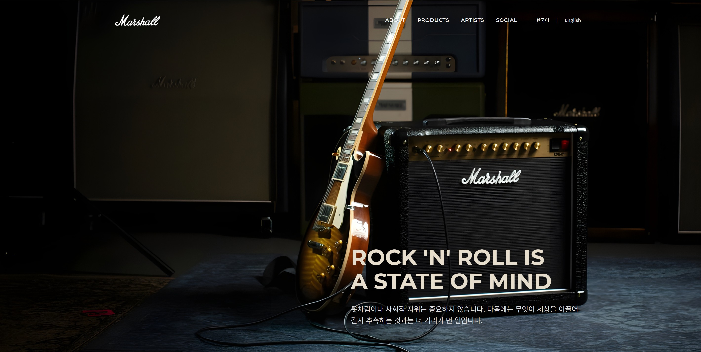

MARSHALL
브랜드 스토리, 제품, 아티스트, 커뮤니티 콘텐츠가 자연스럽게 이어지도록 원페이지 흐름을 정리한 리디자인 프로젝트
- 문제 브랜드 소개, 제품, 커뮤니티 콘텐츠가 분리되어 보여 한 페이지 안의 탐색 흐름이 약함
- 접근 About→Products→Artists→Social 순서로 IA를 재구성하고, 모바일 메뉴와 푸터 아코디언 접근성 보강
- 효과 제품 이미지 비율과 섹션 간 여백 리듬을 정리해 모바일/데스크톱 모두 안정적인 스토리 흐름 확보